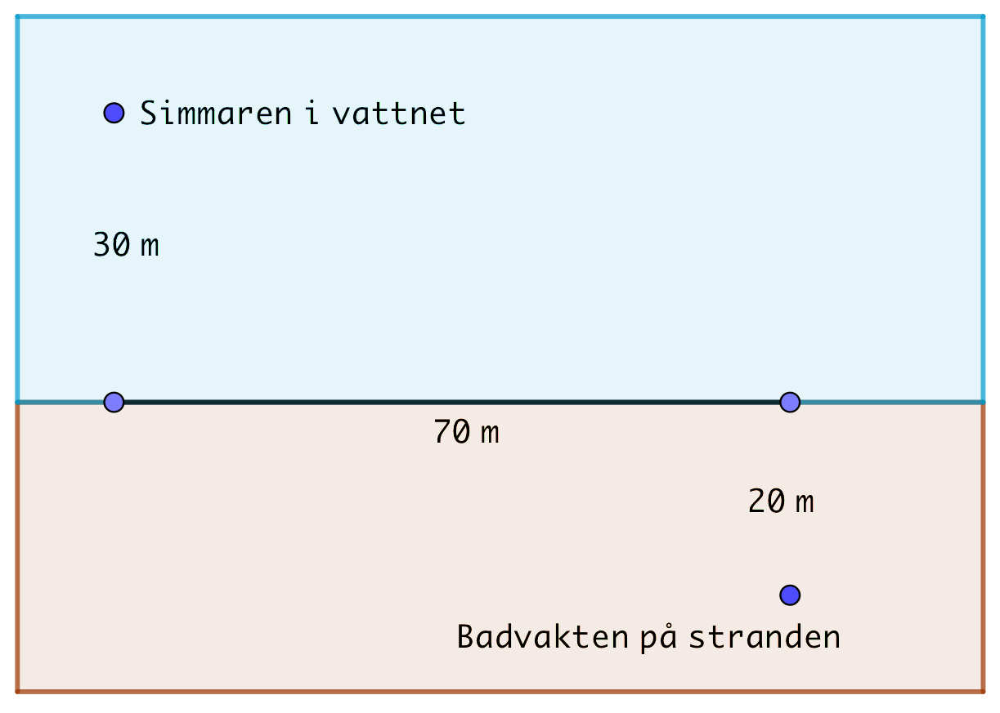

15. Repetition
Uppgifter
- Bestäm definitionsmängd för följande funktioner.
- \( \sqrt{-5-x} \)
Roten är definierad då radikanden, det som är under roten är positivt. Alltså \( x \leq -5 \).
- \( \dfrac{\sqrt{3-x}}{\sqrt{-5-x}} \)
Täljaren är definierad då \( x \leq 3 \).
Nämnaren får inte ha värdet noll och är definierad då \( x < -5 \).
Alltså är definitionsmängden \( x < -5 \).
- \( \sqrt[3]{-5-x} \)
En udda rot är alltid definierad. Alltså är definitionsmängden alla reella tal, \( \mathbf{R} \).
- \( \sqrt{-5-x} \)
- Förenkla följande uttryck utan räknare. Kontrollera svaret genom att lösa den på räknare.
- \( 2\log_6 3 +\log_6 4 \)
\( 2\log_6 3 +\log_6 4 = \log_6 3^2 + \log_6 4 = \log_6 (3^2 \cdot 4) = \log_6 36 = \log_6 6^2 = 2\log_6 6 =2\cdot 1 =2 \)
- \( \lg x -\lg\dfrac{x}{y^2} \)
\( \lg x -\lg\dfrac{x}{y^2} = \lg x - (\lg x - \lg y^2)=\lg x -\lg x +\lg y^2 = 2\lg y \)
- \( \log_3 (\sqrt{10}-1) + \log_3 (\sqrt{10}+1) \)
Vi får
\( \begin{array}{rcl} \log_3 (\sqrt{10}-1) + \log_3 (\sqrt{10}+1) & = & \log_3 [(\sqrt{10}-1)(\sqrt{10}+1)] \\ & = & \log_3 (\sqrt{10})^2 -1^2 \\ & = & \log_3 9 \\ & = & \log_3 3^2 \\ & = & 2\log_3 3 \\ & = & 2 \cdot 1 \\ & = & 2 \\ \end{array} \)
- \( 2\log_6 3 +\log_6 4 \)
- Derivera följande funktioner utan räknare. Kontrollera svaret genom att derivera på räknare.
- \( \sqrt{2x-1} \)
\( D\sqrt{2x-1} = D(2x-1)^{\frac{1}{2}}=\dfrac{1}{2}(2x-1)^{-\dfrac{1}{2}}\cdot 2 = \dfrac{1}{\sqrt{2x-1}} \)
- \( \ln (x^2-1) \)
\( D\ln(x^2-1) = \dfrac{1}{x^2-1}\cdot 2x =\dfrac{2x}{x^2-1} \)
- \( e^{x^3} \)
\( De^{x^3} = e^{x^3}\cdot 3x^2 = 3x^2e^{x^3} \)
- \( \sqrt{2x-1} \)
- Bestäm nollstället för derivatafunktionen för följande funktioner.
- \( f(x) = x^4 \ln x \)
Derivatafunktionen är \( f'(x) = 4x^3 \ln x +x^3 \).
Derivatans nollställe, \( f'(x)=0 \), är \( x = \dfrac{1}{\sqrt[4]{e}} \).
- \( g(x)=\dfrac{\ln x}{x^4} \)
Derivatafunktionen är \( g'(x) = \dfrac{-4\ln x +1}{x^5} \).
Derivatans nollställe, \( g'(x)=0 \), är \( x = \sqrt[4]{e} \).
- \( h(x) = \dfrac{1}{e^{4x}} \)
Derivatafunktionen är \( h'(x) = -\dfrac{4}{e^{4x}} \).
Derivatans nollställe, \( h'(x)=0 \), saknas.
- \( f(x) = x^4 \ln x \)
- Bestäm de reella rötter som uppfyller ekvationen \( \sqrt{2-x}=x+2 \). [H08, 7]
Definitionsmängden
För kvadratroten gäller att definitionsmängden är \( 2-x\geq 0 \Leftrightarrow x\leq 2 \).
Eftersom roten är positiv måste \( x+2 \geq 0 \Leftrightarrow x \geq -2 \).
Då bägge gäller samtidigt får vi definitionsmängden till \( -2\leq x \leq 2 \).
Kvadrering och rotformel ger: \( x=\dfrac{-5\pm\sqrt{17}}{2} \).
Av dessa duger endast \( x=\dfrac{-5 +\sqrt{17}}{2} \) pga definitionsmängden.
- Lös ekvationen \( \dfrac{1}{2} \log_3 (8-x) = \log_3 x +1 \).
Definitionsmängden är \( 8-x > 0 \), alltså \( x < 8 \) och \( x > 0 \). Vi jobbar i intervallet \( 0 < x < 8 \).
\( \begin{array}{rcl} \dfrac{1}{2} \log_3 (8-x) & = & \log_3 x +1 \\ \log_3 (8-x)^{\frac{1}{2}} - \log_3 x & = & 1 \\ \log_3 \dfrac{(8-x)^{\frac{1}{2}}}{x} & = & 1 \\ \dfrac{(8-x)^{\frac{1}{2}}}{x} & = & 3^1 \\ \end{array} \)
Lös vidare. Roten får du bort genom att kvadrera.
Kom fram till \( x = \dfrac{8}{9} \). Kontrollera med definitionsmängden och godkänn roten.
- Bestäm största och minsta värde för funktionen \( f(x)=\sqrt{-x^2+2x+1} \).
\( f'(x)=\dfrac{-x+1}{\sqrt{-x^2+2x+1}} \).
\( f'(x)=0 \) i \( x=1 \). Största och minsta värde i intervallets ändpunkter eller där \( f'(x)=0 \).
Största värdet är \( \sqrt{2} \) och minsta värdet är 0.
- Låt \( f(x) = 3x - 2\sqrt{1-x} \).
- För vilket värde på \( x \) är funktionsvärdet 2?
Definitionsmängden är \( 1-x \geq 0 \). Alltså \( x \leq 1 \).
Vi skall lösa ekvationen \( 2 = 3x - 2\sqrt{1-x} \). Flytta över \( 3x \) och kvadrera.
Lösningen är \( x = \dfrac{8}{9} \).
- Bestäm derivatafunktionen.
\( f'(x) = 3 + \dfrac{1}{\sqrt{1-x}} \), eller som \( \dfrac{3 \sqrt{1-x} + 1}{\sqrt{1-x}} \).
- Bestäm den punkt där tangentens riktningskoefficient har värdet 5.
Vi skall hitta den punkt där derivatan har värdet 5. Alltså skall vi lösa ekvationen \( f'(x)=5 \). Punkten är \( x = \dfrac{3}{4} \).
- För vilket värde på \( x \) är funktionsvärdet 2?
- Tänk dig att du som 20-årig placerar 3000 € så att du har en årlig avkastning om 7 %. Räntan på kapitalet placerar du på samma sätt. Hur mycket kapital har din placering genererat efter 15 år? Hur många hela år tar det för kapitalet att genera 100 000 €?
\( 3000 \cdot 1,07^{15} \approx 8277,09\) € och
\( \log_{1,07}(\dfrac{100}{3})=51,82 \approx 52 \) år.
- I ett gassampel finns den radioaktiva gasen radon. Massan för radon minskar för varje dygn med 17 %. Som bäst är massan för radonen 75 \(\mu\)g. Bilda en funktion, \( m(t) \), som anger massan för radonen när \( t \) dygn har gått.
Bestäm med vilken hastighet massan minskar vid tiden
Då massan minskar med 17 % har vi kvar \( 1-0,17 = 0,83 \).
I börjar har vi 75 \(\mu\)g. Vi får formeln \( m(t) = 75 \cdot 0,83^t \).
Med hjälp av basen \( e \) får vi \( m(t)= 75 \cdot e^{-0,186t} \).
- \( t = 2 \)
Derivatafunktionen är \( m'(t) = 75 \cdot 0,83^t \cdot \ln 0,83 \).
Eller \( m'(t) = -\dfrac{279}{20}e^{-0,186t} \).
\( f'(2) = -9,63 \). Alltså minskar med 9,6 \(\mu\)g.
- \( t = 10 \)
\( f'(10) = -2,17 \). Alltså minskar med 2,2 \(\mu\)g.
- \( t = 2 \)
- Låt \( f(x) = \sqrt{10-x^2} \).
- Bestäm definitionsmängden.
Då \( 10-x^2 \geq 0 \).
Definitionsmängden är \( -\sqrt{10} \leq x \leq \sqrt{10} \).
- Bestäm värdemängden.
Vi behöver största och minsta värdet för funktionen.
Derivatan är \( f'(x) = -\dfrac{x}{\sqrt{10-x^2}} \). Vi får fram att derivatan har ett nollställe i \( x = 0 \).
Använd dig av derivatans nollställe och intervallets ändpunkter för att bestämma största och minsta värde.
Värdemängden är \( 0 \leq x \leq \sqrt{10} \).
- Bestäm ekvationen för tangenten i \( x = 3 \).
Riktningskoefficienten \( k = f'(3) = -3 \).
\( y \)-koordinaten är \( f(3) = 1 \).
Tangenten är \( y - 1 = -3(x-3) \), alltså \( y = -3x +10 \).
- Bestäm ekvationen för normalen i \( x = 1\).
Riktningskoefficienten \( k = f'(1) = -\dfrac{1}{3} \). Normalens riktningskoefficient är då \( 3 \).
\( y \)-koordinaten är \( f(1) = 3 \).
Normalen är \( y - 3 = 3(x-1) \), alltså \( y = 3x \).
- Bestäm definitionsmängden.
- Låt \( g(x) = e^{2x}\).
- Bestäm definitionsmängden.
Eftersom vi har en exponentialfunktion är definitionsmängden alla reella tal.
- Bestäm värdemängden.
För en exponentialfunktion gäller att värdemängden är alla positiva reella tal.
- Bestäm ekvationen för tangenten i \( x = 1\).
Riktningskoefficienten \( k = g'(1) = 2e^2 \).
\( y \)-koordinaten är \( g(1) = e^2 \).
Tangenten är \( y -e^2 = 2e^2(x-1) \), alltså \( y = 2e^2x -e^2 \).
- Bestäm ekvationen för normalen i \( x = 0 \).
Riktningskoefficienten \( k = g'(0) = 2 \). Normalens riktningskoefficient är då \( -\dfrac{1}{2} \).
\( y \)-koordinaten är \( g(0) = 1 \).
Normalen är \( y - 1 = -\dfrac{1}{2}(x-0) \), alltså \( y = -\dfrac{1}{2}x+1 \).
- Bestäm definitionsmängden.
- Låt \( h(x) = x\ln x \).
- Bestäm definitionsmängden.
\( h(x) \) är definierad då \( x \geq 0 \).
- Bestäm värdemängden.
Vi behöver största och minsta värdet för funktionen.
Derivatan är \( h'(x) = \ln(x) + 1 \). Vi får fram att derivatan har ett nollställe i \( x = \dfrac{1}{e} \).
Vi skissar upp ett teckenschema och kommer fram till att \( -\dfrac{1}{e} \) är minsta värde och oändligheten är största värde.
Värdemängden är \( [-\dfrac{1}{e}, \infty [ \).
- Bestäm ekvationen för tangenten i \( x = 1\).
Riktningskoefficienten \( k = h'(1) = 1 \).
\( y \)-koordinaten är \( h(1) = 0 \).
Tangenten är \( y - 0 = 1(x-1) \), alltså \( y = x-1 \).
- Bestäm ekvationen för normalen i \( x = 5\).
Riktningskoefficienten \( k = h'(5) = \ln (5) + 1 \). Normalens riktningskoefficient är då \( -\dfrac{1}{\ln(5)+1} \).
\( y \)-koordinaten är \( h(5) = 8 \).
Normalen är \( y - 8 = -\dfrac{1}{\ln(5)+1}(x-5) \), alltså \( y = -\dfrac{1}{\ln(5)+1}x +\dfrac{5}{\ln(5)+1} + 8 \).
- Bestäm definitionsmängden.
- Låt \( f(x) = \sqrt{x+1} \). Bestäm tangenten för funktionen då \( x = 3\).
Definitionsmängden är \( x \geq -1 \).
\( f'(x)=\dfrac{1}{2\sqrt{x+1}} \).
\( k=f'(3)= \dfrac{1}{4} \) och \( y = f(3) = 2 \).
Tangentens ekvation är \( y - 2 = \dfrac{1}{4}(x-3) \) som är \( y = \dfrac{1}{4}x + \dfrac{5}{4} \).
- Låt \( f(x) = e^{x+1}\). Bestäm normalen för funktionen i \( x = -1\).
\( f'(x)= e^{x+1} \).
\( f'(-1) = 1\). Då är normalens riktningskoefficient \( -1 \).
\( y \)-koordinaten för normalen, \( f(-1) = 1 \).
Normalens ekvation är \( y - 1 = -1(x+1) \) som är \( y = -x \).
- Visa att linjen \( y = -2x +3 \) är normal för funktionen \( f(x) = \sqrt{4x+18} \).
\( f \) är definierad då \( x \geq -4\dfrac{1}{2} \).
Skärningspunkten för linjen och funktionen är \( x = -\dfrac{1}{2} \).
Derivatafunktionen är \( f'(x) = \dfrac{2}{\sqrt{4x+18}}\).
Eftersom \( f'(-\dfrac{1}{2}) = \dfrac{1}{2} \) och \( -2 \cdot \dfrac{1}{2} = -1 \) gäller att linjen \( y = -2x+3 \) är vinkelrät mot funktionen \( f \).
- Visa att \( 2\log_2 (1+\sqrt{3}) = \log_2 (2 + \sqrt{3}) + 1 \).
Vi förenklar
\( \begin{array}{rcl} 2\log_2 (1+\sqrt{3}) & = & \log_2 (2 + \sqrt{3}) + 1 \\ \log_2 (1+\sqrt{3})^2 - \log_2 (2 + \sqrt{3}) & = & 1 \\ \end{array} \)
Detta tar vi och räknar
\( \begin{array}{rcl} \log_2 \dfrac{(1+\sqrt{3})^2}{2 + \sqrt{3}} & = & \log_2 \dfrac{1+2\sqrt{3} + 3}{2 + \sqrt{3}} \\ & = & \log_2 \dfrac{2(2+\sqrt{3})}{2 + \sqrt{3}} \\ & = & \log_2 2 \\ & = & 1 \\ \end{array} \)
Vilket är det vi skulle visa.
- Bestäm de värden för \( a \) så att funktionen \( f(x)=\sqrt{x^2+a} \) tangent i punkten 3 har riktningskoefficienten 1.
\( f'(x)=\dfrac{x}{\sqrt{x^2+a}} \). Tangent i punkten 3 som har riktningskoefficienten 1 betyder att \( f'(3)=1 \Leftrightarrow \dfrac{3}{\sqrt{3^2+a}}=1 \). \( a=0 \).
- En badvakt på en simstrand befinner sig vid en kiosk för att köpa glass när hen plötsligt hör ett nödrop från en simmare. Badvakten springer till stranden simmar ut till den nödställda. Vid vilket ställe på stranden skall badvakten hoppa i och börja simma så att hen tar sig så snabbt som möjligt ut till simmaren? Hur länge tar det? Badvakten springer med hastigheten 7,0 m/s och simmar med hastigheten 2,0 m/s.

Eftersom \( v = \dfrac{s}{t} \) så är \( t = \dfrac{s}{v} \). Vi skapar en funktion och söker den minsta tiden.
Vi betecknar med \( x \) den punkt vinkelrät från simmaren där badvakten skall simma mot simmaren. Sträckan på land är \( \sqrt{20^2 + (70-x)^2} \). Sträckan i vattnet är \( \sqrt{30^2-x^2} \).
Funktionen är \( t(x) = \dfrac{\sqrt{20^2 + (70-x)^2}}{7} + \dfrac{\sqrt{30^2 + x^2}}{2} \). Vi jobbar i intervallet \( 0 \leq x \leq 70 \).
Derivera och lös ut nollstället, \( x = 8,47 \).
Visa att det minsta värdet får vi då badvakten börjar simma vid 8,5 m.
Tiden är 25 sekunder.
- Ett kärl har formen av en upp och nedvänd cirkulär kon som står så att spetsen är nedåt. Kärlet är lika högt som halva diametern. Kärlet fylls med vatten så att flödeshastigheten är 10 liter/s. Bestäm hastigheten som vatten stiger vid 1 och 10 sekunder.
Volymen för kärlet är \( V = \dfrac{1}{3}\pi h^3 \). Alltså \( h = \sqrt[3]{\dfrac{3V}{\pi}} \).
Vid tiden \( t \) är vattenmängden i kärlet \( 10t \) dm3. Alltså får vi \( h(t) = \sqrt[3]{\dfrac{3\cdot 10 t}{\pi}} = \sqrt[3]{\dfrac{30t}{\pi}} = \sqrt[3]{\dfrac{30}{\pi}} \cdot \sqrt[3]{t} \).
Derivatafunktionen är \( h'(t) = \sqrt[3]{\dfrac{30}{\pi}} \cdot \dfrac{1}{3} \cdot t^{-\frac{2}{3}} \).
\( h'(1) = 7,1 \) cm/s
\( h'(10) = 1,5 \) cm/s
- Visa att \( x \ln x + 1 \geq x \) då \( x > 0 \).
\( x \ln x + 1 \geq x \) är samma som \( x \ln x + 1 -x \geq 0 \) som är samma som \( \ln x + 1 \geq 0 \).
Vi visar att funktionen \( f(x) = \ln x + 1 \geq 0 \).
Derivatafunktionen är \( f'(x) =\dfrac{1}{x} \).
Eftersom \( x > 0 \), gäller att derivatafunktionen alltid är positiv och funktionen är strängt växande.
\( \ln x + 1 \geq 0 \) är samma som \( \ln x \geq -1 \). Eftersom \( \ln \) alltid är positiv och \( f \) är strängt växande så gäller olikheten i början, \( x \ln x + 1 \geq x \).
- Visa att \( \sqrt{x} > \ln (x + 1) \) för alla värden då \( x > 0 \).
Vi skall visa att \( \sqrt{x} - \ln (x+1) > 0 \).
Vi visar att funktionen \( f(x) = \sqrt{x} - \ln (x+1) \) där \( x \geq 0 \) alltid är positiv.
Derivatafunktionen är \( f'(x) = \dfrac{1}{2\sqrt{x}} - \dfrac{1}{x+1} = \dfrac{x+1-2\sqrt{x}}{2(x+1)\sqrt{x}} \).
Derivatan har ett nollställe i \( x = 1 \), annars är den positiv. Se till att du löser det, undersök täljaren.
Alltså är \( f \) strängt växande i intervallet \( [0,\infty [ \).
Eftersom \( f(0) = 0 \) gäller det att \( f(x) > 0 \) när \( x > 0 \).
- Ge exempel på en växande funktion \( f \) som uppfyller följande villkor
- \( f(0)=1 \)
- \( f'(1)=2 \)
- \( f''(2)=0 \)
- Tex \( f(x)= 2x+1 \) eller \( g(x) = e^x \).
- Tex \( f(x)= 2x+1 \), \( f'(x)=2x \).
- Tex \( f(x)= 2x \), \( f''(x) = 0 \).
En möjlig kandidat är \( f(x) = 2x+1 \).